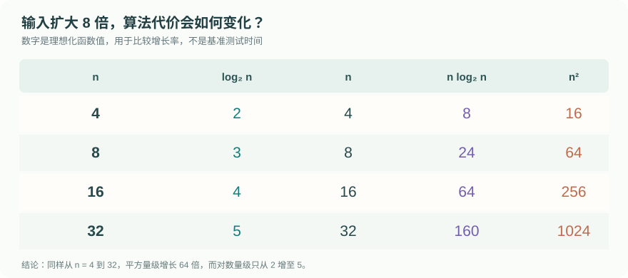
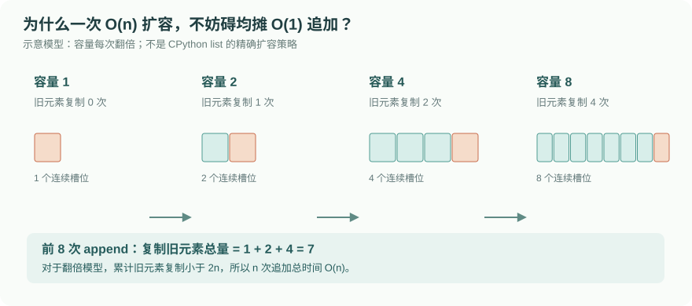

复杂度分析：给增长率一个精确定义
为什么一次追加会突然很慢，却仍然可以称为均摊 O(1)？从操作计数、渐进上界和容量翻倍模型出发，不用计时截图也能推导原因。
先决定成本模型，再说算法快慢
假设输入包含 n 个元素，我们要预测随着 n 变大，算法执行了多少次基本操作。这里的操作可以是一次比较、一次数组槽位读取或一次赋值。时间复杂度描述操作计数如何增长，不是某台电脑上的毫秒数。
例如在数组中顺序寻找目标，若目标在最后或不存在，就需要检查 n 个元素；在已排序数组上二分查找，每次排除约一半候选位置，比较次数随 log₂ n 增长。
def linear_find(a, target):
for i, value in enumerate(a):
if value == target:
return i
return -1
def binary_search_leftmost(a, target):
# a 必须按升序排列
lo, hi = 0, len(a)
while lo < hi:
mid = (lo + hi) // 2
if a[mid] < target:
lo = mid + 1
else:
hi = mid
return lo if lo < len(a) and a[lo] == target else -1二分查找的前置条件是序列有序，且能够以低成本通过下标访问元素；对无序输入直接二分不会得到正确答案。
大 O 是上界，不是精确运行时间
对非负成本函数 T(n) 和参考函数 g(n)，写作 T(n) ∈ O(g(n)) 的含义是：存在正常数 c 和阈值 n₀，只要 n ≥ n₀，就有 T(n) ≤ c g(n)。它允许忽略常数因子及低阶项，但不允许跳过“足够大”的前提。
例如 3n² + 7n + 12 属于 O(n²)，同时也属于较宽松的 O(n³)。如果要表达恰好相同的渐进增长量级，通常用 Θ(n²)；如果强调下界，用 Ω。

在推导中识别常见增长类型
| 量级 | 典型模式 | 需要注意 |
|---|---|---|
| O(1) | 一次数组下标访问 | 这是单次基本槽位操作的抽象模型 |
| O(log n) | 每一步淘汰一半搜索区间 | 需有单调 / 排序性质和合适的访问方式 |
| O(n) | 扫描全部 n 个元素 | 循环可提前退出，但最坏仍可线性 |
| O(n log n) | n 层次上的对数分治工作 | 例如比较排序中的归并排序 |
| O(n²) | 比较所有位置对 | 有些双层循环依然是 O(n)，不能只数层数 |
| O(2ⁿ) | 枚举全部子集 | 指数分支可能被剪枝，但最坏仍很大 |
分析循环时要数实际执行的迭代总量。两个指针都从左到右单调推进的算法，哪怕内外两层循环，左右指针各自最多前进 n 次，故总次数为 O(n)，而不是自动判成 O(n²)。
改变输入规模
均摊分析：容量翻倍的元素搬移
假设一个教学用动态数组初始容量为 1；空间满时，把容量扩大为原来的 2 倍，再将已有元素拷贝过去。大多数 append 只写一个空槽，代价 O(1)；恰好扩容的那次需要复制原有元素，单次最坏为 O(n)。

观察任何连续的 n 次从空数组开始的追加：发生扩容时，旧元素搬移总数形如 1 + 2 + 4 + ···。如果最大一次搬移的长度小于 n，那么所有历史搬移总数小于 2n。加上每次写入本身的 n 次，总成本至多与 3n 同阶。
因此 n 次追加总成本 O(n)，平均摊到每次是 O(1)。这不是概率意义上的“平均情况”，而是针对操作序列的确定性总账分析。Python 列表也采用预留容量避免每次追加都重新分配，但实际增长因子不必等于这个教学模型。
空间复杂度：额外内存也需要计数
通常讨论辅助空间时，不把输入本身计为额外分配。使用两个下标原地反转数组，只需要常数个额外变量，辅助空间 O(1)；创建一份新列表保存所有元素，辅助空间 O(n)。
def reverse_in_place(a):
left, right = 0, len(a) - 1
while left < right:
a[left], a[right] = a[right], a[left]
left += 1
right -= 1
return a
assert reverse_in_place([1, 2, 3]) == [3, 2, 1]
assert reverse_in_place([]) == []递归调用还要计入调用栈：深度为 n 的递归可能用掉 O(n) 栈空间，即使函数体只声明了几个局部变量。迭代改写常能避免深层递归，但不意味着任何迭代实现的总体内存都会更少。
如何用实测验证，而不把实测当证明
可用 Python timeit 对不同规模的输入重复计时，但必须保证工作真的执行、输入具有可比较的分布、计时不包含不相关的数据构建成本。比如使用 list.index() 时，目标越靠前，扫描越短；固定目标却让它偶然在不同位置出现，就无法控制实验。
from timeit import repeat
for n in (1_000, 10_000, 100_000):
a = list(range(n))
# 故意查找不存在的元素：观察完整扫描
samples = repeat(lambda: (-1 in a), number=100, repeat=5)
print(n, min(samples) / 100) # 每次检查的秒数观察曲线接近线性只能提供证据，不能代替对循环不变量和操作次数的数学分析。CPU 缓存、解释器、分配器、重复实验的预热状态都会影响常数。比较不同算法时，还需要验证输出相同、输入不被意外更改。
带走三个判断准则
- 大 O 表达足够大输入上的渐进上界；不要把它说成“确切耗时”或自动等于平均情况。
- 数总操作次数，而不是仅凭嵌套循环层数或一次基准测试做判断。
- 均摊分析以整个操作序列为单位；动态数组追加的单次峰值可能是 O(n)，序列均摊却是 O(1)。
继续学习与校验资料
- MIT 6.006 课程讲义 — 渐进分析、数据结构与均摊分析
- Python 设计 FAQ — CPython list 使用连续的引用槽位
- Python timeit — 小代码片段测量方法